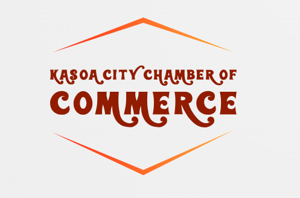
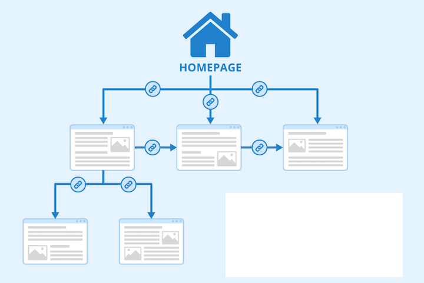
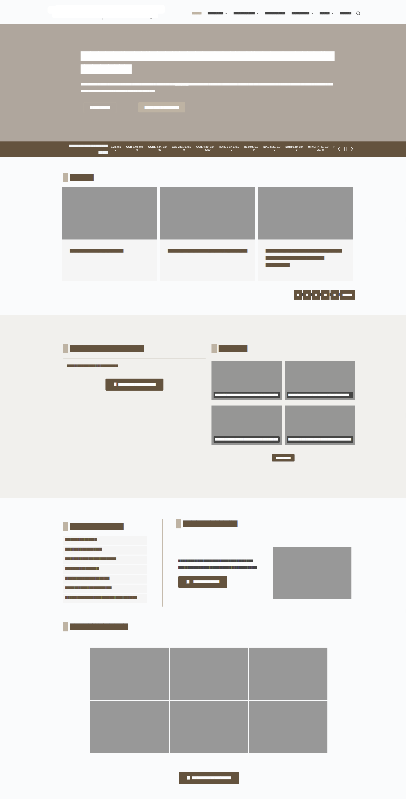

Overview
Site Name - KCoC
Kasoa Chamber of Commerce - is the name that will represent the Kasoa Chamber of Commerce in the city of Kasoa in the central region of Ghana.
Purpose
Networking with other businesses and professionals within your community can strengthen the business relationships you have and increase the potential for more business opportunities. Participating in your local chamber of commerce can also help you reach new customers. Understanding the chamber of commerce meaning and how it works for local businesses can help you get more out of it.
Audience
The Chamber of Commerce website in Ghana serves as a comprehensive platform catering to a diverse range of audiences. Local businesses access vital resources, networking opportunities, and support services, while foreign investors seek information on market opportunities and regulatory frameworks. Government agencies utilize the platform for collaboration and engagement with the business community, while trade partners explore potential partnerships and trade missions. Additionally, educational institutions and the general public benefit from accessing business education resources and staying informed about the country's business landscape and economic trends.
Scenarios
- What events will the chamber be holding this month that promote business-to-business networking?
- Where can I find contact information for the chamber's board of directors?
- What has been the population growth in the area?
- Where can I find information on tourist attractions and investment incentives promoted by the Chamber of Commerce in Kasoa
- Are there any upcoming networking events or business seminars organized by the Chamber of Commerce?
- What are the export and import procedures, tariffs, and regulations I need to be aware of for trading in Ghana?
- Where can I find information on tourist attractions and investment incentives promoted by the Chamber of Commerce in Ghana?
Brand Identity
Website Logo, transparent background

Style Guide
Color Schema
Pallet URL: Click to view our Color Pallete
| Primary | Secondary | Accent 1 | Accent 2 | Background |
|---|---|---|---|---|
| #ff4f1f | #f19b07 | #374249 | #000000 | #ffffff |
Typography
Heading Font: Montserrat, Calibri
Paragraph Font: Roboto, Arial
Normal Paragraph Example:
Do not trust your money to others without a thorough evaluation of any proposed investment. Our people have lost far too much money by trusting their assets to others. In my judgment, we never will have balance in our lives unless our finances are securely under control. The prophet Jacob said to his people: “Wherefore, do not spend money for that which is of no worth, nor your labor for that which cannot satisfy.?
Colored Paragraph Example:
Do not trust your money to others without a thorough evaluation of any proposed investment. Our people have lost far too much money by trusting their assets to others. In my judgment, we never will have balance in our lives unless our finances are securely under control. The prophet Jacob said to his people: “Wherefore, do not spend money for that which is of no worth, nor your labor for that which cannot satisfy.?
Nav Bar:
Site Map

Wireframe
Desktop
